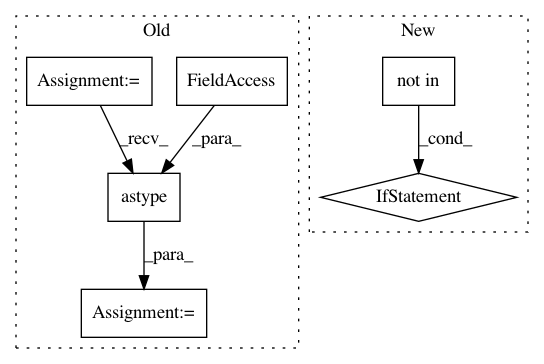

0d39c9dc19388c18362897c83cebbe12a063a752,trixi/logger/visdom/pytorchvisdomlogger.py,PytorchVisdomLogger,show_image_grid_heatmap,#PytorchVisdomLogger#Any#Any#Any#Any#Any#Any#Any#Any#Any#Any#,348
Before Change
if image_args is None: image_args = {}
map_grid = np_make_grid(heatmap, normalize=normalize)
map_ = np.clip(map_grid * 255, a_min=0, a_max=255)
map_ = map_.astype(np.uint8)
map_ = cv2.applyColorMap(map_.transpose(1, 2, 0), colormap=colormap)
map_ = cv2.cvtColor(map_, cv2.COLOR_BGR2RGB)
map_ = map_.transpose(2, 0, 1)
fuse_img = map_
After Change
opts = {}
if image_args is None:
image_args = {}
if "normalize" not in image_args:
image_args["normalize"] = normalize
// if len(heatmap.shape) != 4:
// raise IndexError(""heatmap" must have dimensions BxCxHxW!")
map_grid = np_make_grid(heatmap, normalize=normalize) // map_grid.shape is (3, X, Y)
if heatmap.shape[1] != 3:
map_ = colormap(map_grid[0])[..., :-1].transpose(2, 0, 1)
else: // heatmap was already RGB, so don"t apply colormap
In pattern: SUPERPATTERN
Frequency: 3
Non-data size: 6
Instances
Project Name: MIC-DKFZ/trixi
Commit Name: 0d39c9dc19388c18362897c83cebbe12a063a752
Time: 2019-06-14
Author: jens.petersen@dkfz.de
File Name: trixi/logger/visdom/pytorchvisdomlogger.py
Class Name: PytorchVisdomLogger
Method Name: show_image_grid_heatmap
Project Name: MIC-DKFZ/trixi
Commit Name: 0d39c9dc19388c18362897c83cebbe12a063a752
Time: 2019-06-14
Author: jens.petersen@dkfz.de
File Name: trixi/logger/file/pytorchplotfilelogger.py
Class Name: PytorchPlotFileLogger
Method Name: show_image_grid_heatmap
Project Name: nipy/dipy
Commit Name: 491868d5bb9c73324cd7ec25f06d1f3499f01072
Time: 2015-07-16
Author: jomaroceguedag@gmail.com
File Name: dipy/align/imaffine.py
Class Name: AffineMap
Method Name: _apply_transform